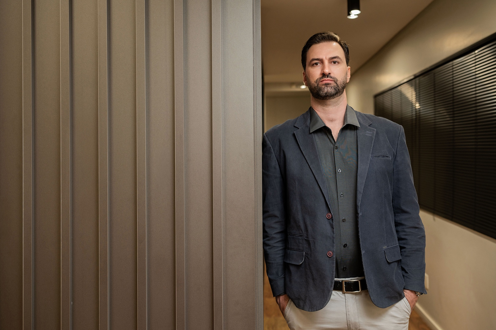
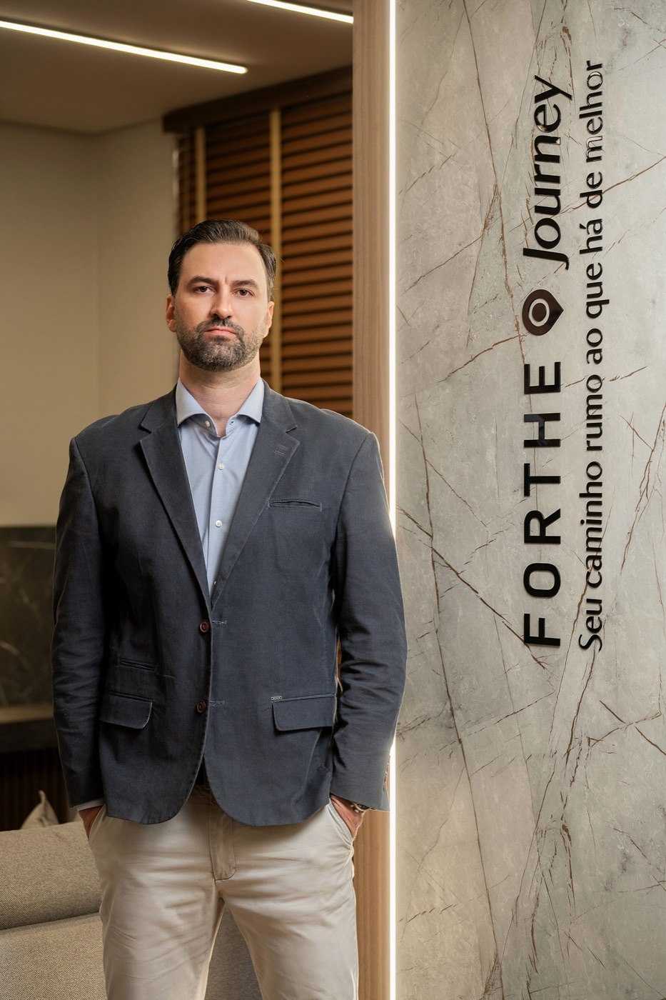

Conduza a sua empresa, em vez de socorrê-la.
A maioria das imobiliárias começa no improviso. O melhor corretor sai da imobiliária onde trabalha e abre a própria. É ele que resolve tudo no WhatsApp pessoal. O processo mora na cabeça de uma pessoa só, não está exposto para todos. É a exceção aprovada de qualquer jeito, a qualquer hora, por qualquer meio. É você, dono, que precisa vender por si para se sustentar e vender pela sua equipe, porque no fim só fecha se você estiver participando.
E funciona, no começo. Esse é o problema. Mas não se sustenta.
Foi o improviso que fez a sua empresa existir quando não havia estrutura, dinheiro e nem gente. Só que o improviso não acumula: resolve por pouco tempo e some.
Dez anos de improviso não constroem dez anos de empresa. Constroem dez anos de dono exausto.
A sua imobiliária está em um desses?
Funciona porque você está lá. Se você se ausentar por um dia, a operação para.
Existe padrão, mas não está escrito e ninguém acompanha. O resultado varia todo mês, inconstante, sem previsibilidade.
Você olha o funil no dia 1 e sabe quanto vai vender no fim do mês: quantos negócios vai fechar, em número e em VGV, e as comissões geradas.
Você abre braços novos e praça nova, sem a operação atual perder ritmo.

Sou Fernando Henrique Dall'Agnol, corretor de imóveis da Forthe Imobiliária, em Cascavel/PR, desde 2014, e sócio proprietário desde 2017. Comecei no mercado imobiliário em 2010: de corretor a dono, gestor de locação por cinco anos, gestor de vendas, tocando uma imobiliária de venda e locação, gerindo e treinando equipe, olhando para a operação de forma global.
O que entra no seu acompanhamento depende do diagnóstico da sua empresa, não de uma grade pronta.
Questionário, conversa e direcionamento. Não é formulário de captura: é a primeira entrega. É aqui que descobrimos em que estágio a sua imobiliária está, os gargalos e as oportunidades de melhoria.
O que já funciona sozinho, o que funciona somente com você presente, o que precisa ser mudado e em qual ordem de urgência. Você sai sabendo os próximos passos.
Seis meses, com encontros periódicos para medir as implementações e garantir evolução constante. Uma etapa por vez, na ordem que o diagnóstico apontou e que definimos juntos.
Você não implanta tudo. Implanta na ordem certa, uma coisa por vez.
Como e se você vai passar por cada um depende do seu diagnóstico. O conteúdo é totalmente personalizado.
O seu papel como líder é diferente do que era como corretor. O que muda quando você assume uma imobiliária? A mentalidade. As habilidades também são outras, e é isso que a gente potencializa. Rotinas da gestão, papel do gestor, gestão por processos.
Venda e locação com o mesmo rigor: rotina do gestor, processo definido da captação ao fechamento, playbook, funil medido etapa por etapa e método para quem não produz.
A parte que ninguém acompanha até virar problema: inadimplência, cobrança, repasse, nota fiscal, DIMOB, manutenção, rescisão e a política de comissionamento de cada setor.
Quem executa quando você não está olhando: organograma, cargos, salários, carreira, avaliação, feedback, contratação e retenção. Mais a cultura, que é o que acontece na sua ausência, e a rotina para corretores.
Funil de venda e de locação lidos etapa por etapa, CRM que vira decisão e não relatório, metas construídas com número.
Como o mercado enxerga a sua imobiliária e os modelos para escalar negócios: BTS, permutas para construção ou loteamentos, incorporação, áreas industriais e locação comercial.
Encontros agendados a cada 18 ou 20 dias. Não é curso para assistir, é implementação guiada.
Tempo para implementar, ajustar e ver as mudanças aparecerem nos resultados.
Você não sai com um resumo. Sai com um plano de ação.
Quando o diagnóstico pedir, eu treino o time junto com você. Estrutura que só o dono entende não sobrevive à segunda-feira.
O segundo assento está incluído. Decisão de estrutura não se toma sozinho.
E entre um encontro e outro você me chama. Ligação, WhatsApp, o que for mais rápido. O que importa é a sua entrega e a sua evolução, não a data do próximo encontro.
Print, sem edição. É o que chega no meu WhatsApp de quem já implantou.
Mensagem de mentorado. Recorte vertical 3:4.
Mensagem de mentorado. Recorte vertical 3:4.
Mensagem de mentorado. Recorte vertical 3:4.
Mensagem de mentorado. Recorte vertical 3:4.
Mensagem de mentorado. Recorte vertical 3:4.
Mensagem de mentorado. Recorte vertical 3:4.
Espaço para depoimento. A fala do mentorado, sem edição de conteúdo.
Espaço para depoimento. A fala do mentorado, sem edição de conteúdo.
Espaço para depoimento. A fala do mentorado, sem edição de conteúdo.
Nota de produção, apagar quando a prova entrar: seis prints e três depoimentos reservados. Print sem retoque vale mais que depoimento diagramado. Nenhum depoimento vai ao ar sem nome, cidade e o número que mudou. Enquanto não houver material com autorização, esta seção inteira não é publicada.
Prefiro dizer agora do que na conversa.
A mentoria é para quem tem ou quer ter time.
Não existe “dobrar seu faturamento em três meses”. Se te prometem isso, desconfie.
A mudança começa por você, líder, antes de chegar na sua equipe.
Isso aqui é implantação. Você sai de cada encontro com uma tarefa.
Não tem vendedor, não tem equipe comercial, não tem script.
Você fala direto comigo.
Se você sair dois dias, o que trava primeiro? É por aí que descobrimos onde a sua imobiliária está estagnada.
Mesmo que a gente não trabalhe junto.
Como quem atende sou eu, ela é limitada de verdade. Não é escassez de página de vendas.
Essa é a primeira pergunta da conversa. Se você já sabe a resposta e ela te incomoda, é sinal de que vale conversar.
Conversar com o Fernando Questionário de dez minutos antes. Sem compromisso e sem proposta na primeira conversa.